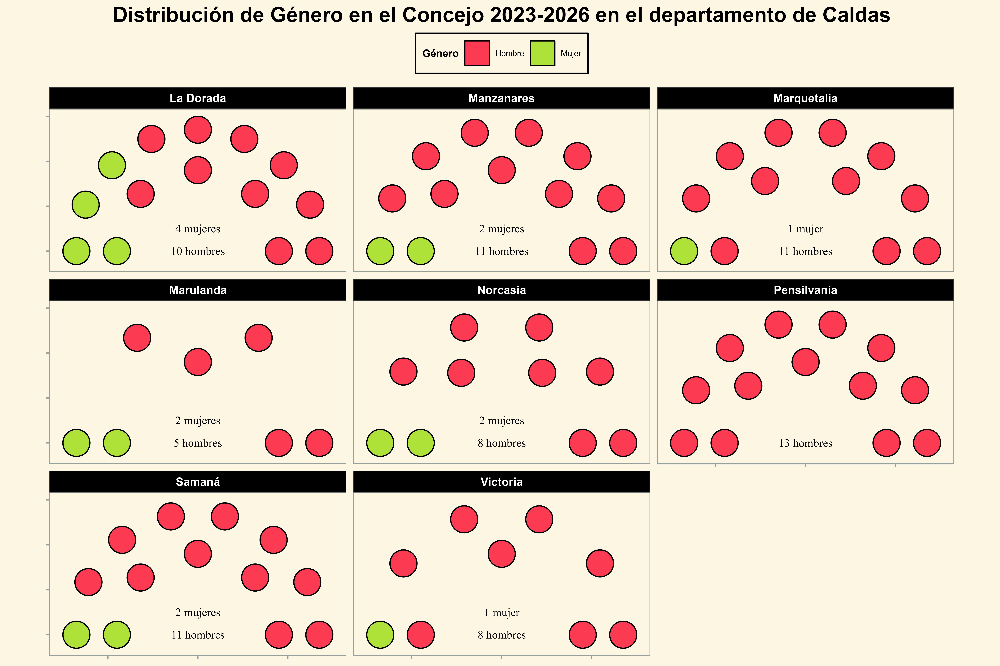
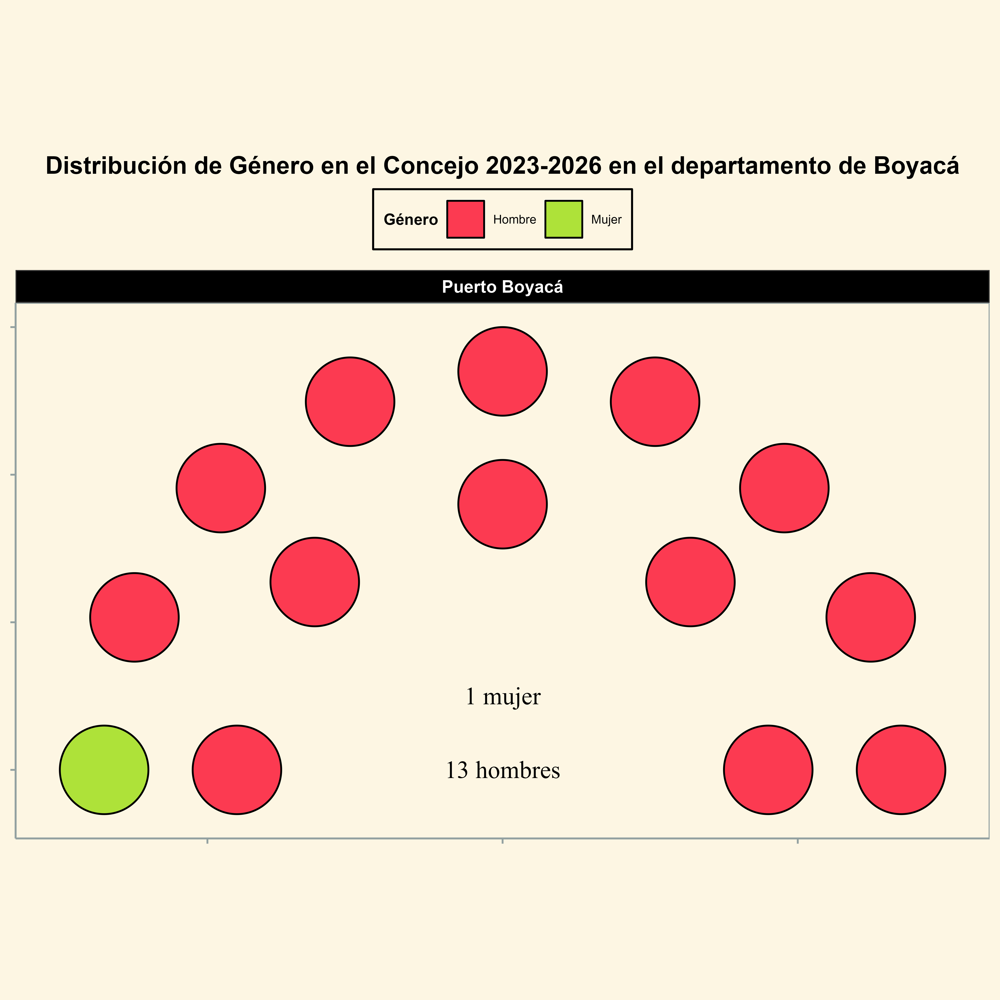
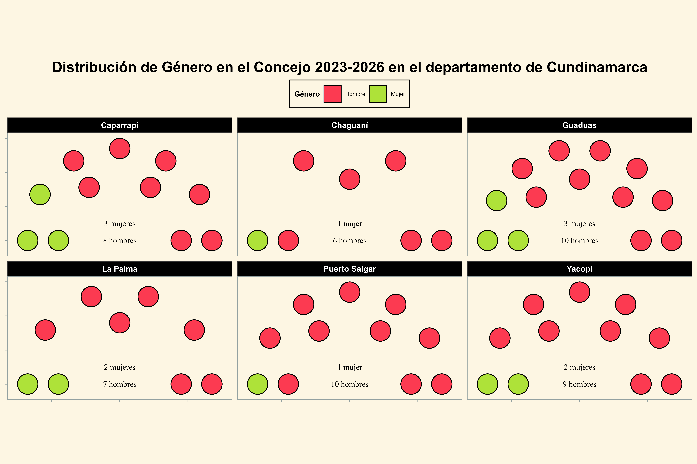
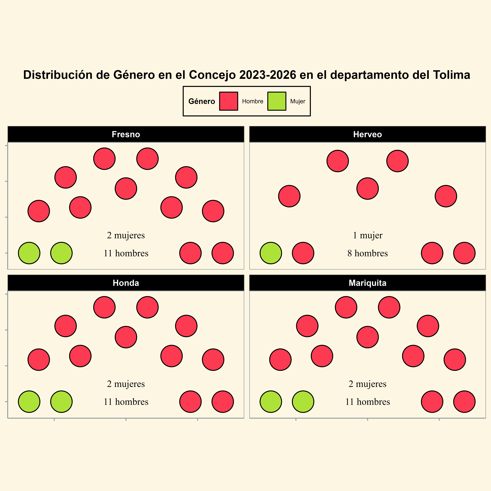
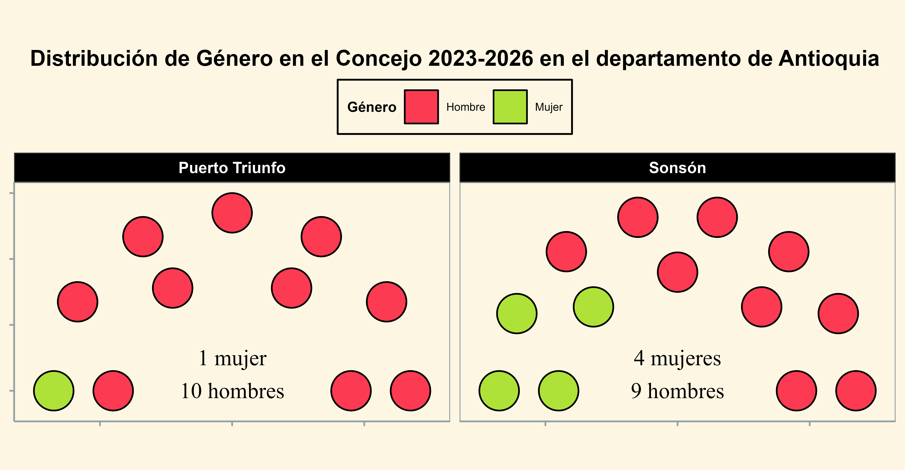
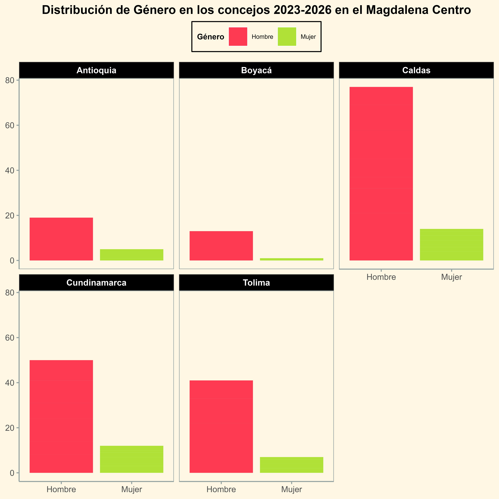

Distribución por género de los Concejos en el Magdalena Centro 2023-2026

Escaños Concejos del Magdalena Centro caldense desagregados por género 2023-2026

Escaños Concejos del Magdalena Centro boyacense desagregados por género 2023-2026

Escaños Concejos del Magdalena Centro cundinamarcense desagregados por género 2023-2026

Escaños Concejos del Magdalena Centro tolimense desagregados por género 2023-2026

Escaños Concejos del Magdalena Centro antioqueño desagregados por género 2023-2026

Escaños Concejos del Magdalena Centro desagregados por género 2023-2026